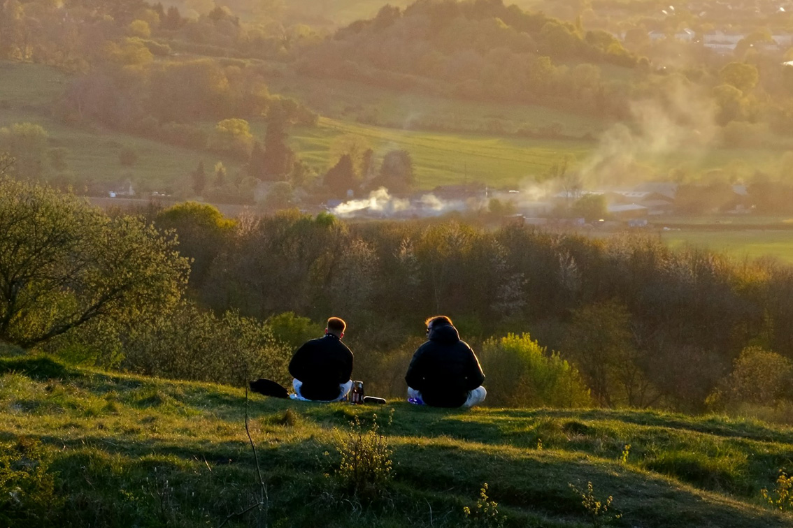

About Us
Unknown Worlds is a company established to develop the site as a permanent venue for outdoor roleplaying events. It provides a clear structure for long-term planning and investment, allowing members of the community to support the project and contribute to its development.
A Structured Approach
Unknown Worlds provides a dedicated structure for the long-term development of the site. It brings together planning, investment, and governance within a single organisation, ensuring that decisions are made with a consistent and coordinated approach.
The organisation works in consultation with its investors to establish a clear plan for the site’s future. An advisory board with relevant professional experience supports this process, helping to guide development as the project evolves.
Experienced Operation
The site will be operated by Profound Decisions (opens in a new tab), an experienced UK events organiser who will be responsible for the day-to-day management of the site and the delivery of events.
This ensures that operations are led by a team with a proven track record of running large-scale outdoor roleplaying events, with established processes for organisation, safety, and event delivery.
A Long-Term Model
The project is based on a long-term, community-supported model. Unknown Worlds enables members of the community to invest in the development of the site, creating a shared commitment to its future.
Rather than operating as a series of temporary or ad hoc events, the site is intended to provide a stable and consistent location where events can take place in a managed and predictable way. This supports ongoing investment in the land and allows the site to develop over time within a clear and responsible framework.
